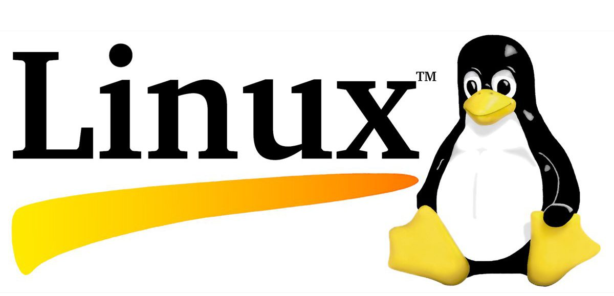

What is Linux?
Linux is a free and open-source operating system (OS) based on Unix. It is a powerful and versatile operating system that can be used on a wide variety of devices, including computers, servers, and embedded systems.
Linux is a popular choice for both personal and professional use. It is often used by developers, system administrators, and businesses. Linux is also a popular choice for home users who want a powerful and customizable operating system. Linux is a complex operating system, but it is also very flexible. It can be customized to meet the needs of a wide variety of users. Linux is also very stable and secure. It is a good choice for users who want an operating system that is reliable and safe.
Here are some of the benefits of using Linux:
- • Free and open-source: Linux is free to download and use. The source code is also available for anyone to view and modify. This makes Linux a very affordable and transparent operating system.
- • Powerful and versatile: Linux is a powerful operating system that can be used on a wide variety of devices. It is a good choice for users who need a powerful and flexible operating system.
- • Customizable: Linux is a very customizable operating system. Users can change the look and feel of the operating system to meet their needs. This makes Linux a good choice for users who want a unique and personalized operating system.
- • Stable and secure: Linux is a very stable and secure operating system. It is a good choice for users who need an operating system that is reliable and safe.